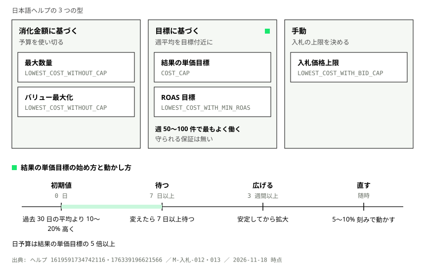
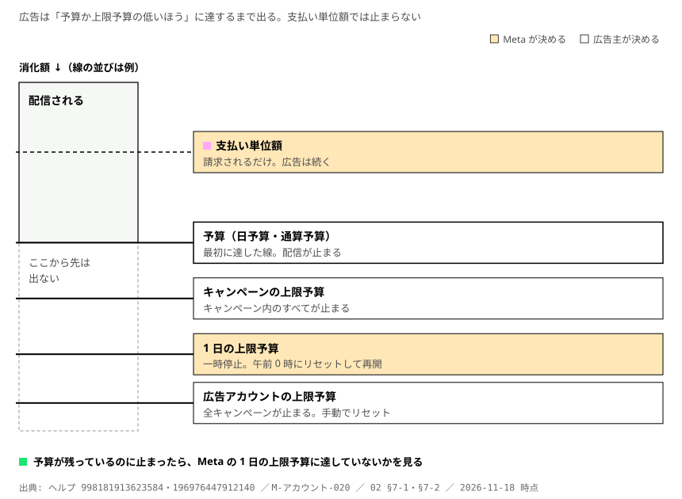

[ Meta / 02 ]
02入札と予算
位置づけ: 入札戦略の選び方、目標値の置き方、予算の持ち方と動き方、上限と請求を引くメモ。Google の ../Google広告の基礎/02_自動入札と予算.md（以下 G02）に当たる。情報収集期間の定義と「大幅な編集」の一覧（予算・入札の変更がどこから入るか）は 00_全体像.md §6（以下 00§6）にあり、ここでは参照するだけにする
このメモについて
- 確認日: 2026-11-18（Meta ビジネスヘルプセンターの日本語ページを Claude のアプリ内のブラウザで本文まで読んだ。入札は「入札戦略について」と各戦略・各ベストプラクティスの 11 ページ、予算は「予算について」「1日の予算について」「1日の予算の変更について」「通算予算について」「キャンペーン予算と広告セット予算について」「最小予算のベストプラクティス」「予算を変更する」、A…
- 位置づけ: 入札戦略の選び方、目標値の置き方、予算の持ち方と動き方、上限と請求を引くメモ。Google の
../Google広告の基礎/02_自動入札と予算.md（以下 G02）に当たる。情報収集期間の定義と「大幅な編集」の一覧（予算・入札の変更がどこから入るか）は00_全体像.md§6（以下 00§6）にあり、ここでは参照するだけにする - 使い方: 確認日から 30 日を過ぎていたら、末尾の出典を取り直してから使う。日予算の上振れ 75% は「一部のアカウントで段階的」とヘルプ自身が書いている（§5-3）
- 凡例: ✓ 公式で確認 ／ △ 資料によって食い違う ／ ? 確認できず
- 主張の出どころの印: 公式〔報道〕〔第三者〕〔推測〕（
01_オークションと配信の仕組み.mdと同じ）
地図
本文
0.先に結論
- 01
入札戦略は 5 つ、ヘルプは 3 つの型に分ける。 消化金額に基づく（最大数量・バリュー最大化）／目標に基づく（結果の単価目標・ROAS 目標）／手動（入札価格上限）✓（1619591734742116）。開発者文書は単価目標・ROAS 目標・入札上限の 3 つを「manual bidding（手動入札）」と呼び、ヘルプの一部（バリュールール）も ROAS 目標を「手動入札戦略」と書く △
- 02
目標値は「今の平均から少し緩く」始めるのが公式の推奨。 結果の単価目標は平均の結果の単価より 10〜20% 高く、ROAS 目標は平均 ROAS より 10〜20% 低く。過去のデータが無ければ、最大数量（ROAS ならバリュー最大化）で 2 週間以上回してから決める ✓（176339196621566、288309751798466）。初版 00§5-3 の「今の実績の平均付近から」〔推測〕は直した
- 03
目標つきの入札は週 50〜100 件以上で最もよく働く。 評価は週平均で、目標を変えたら 7 日以上待つ。拡大は 3 週間以上安定してから、入札の変更は 1 週間あけて、目標の調整は 5〜10% ずつ ✓
- 04
日予算は「週の 1 日あたりの平均」。 1 日は最大 75% 上振れ（1.75 倍）、日曜〜土曜の週で日予算の 7 倍を超えない。予算共有をオンにすると 1 日最大 2.1 倍・週 8.4 倍。ただし「予算について」は 75% の柔軟性を一部のアカウントで段階的と書く △（214319341922580、190490051321426）
- 05
Advantage+ キャンペーン予算（旧 キャンペーン予算の最適化、CBO）では、広告セットを止めない・上限をなるべく置かない・広告セットは 70 まで。 新しい広告セットを足すと再配分に 2 時間ほどかかる ✓（2177212182495139）
- 06
結果の単価目標では日予算を目標額の 5 倍以上に。 日本の広告アカウントの最低予算は米国と同じく基本額の 2 倍の国に入る（開発者文書）✓（203183363050448、開発者文書 Ad Set）
- 07
予算の変更は反映に約 15 分、入札の変更は 15〜20 分で認識。 開発者文書は「入札と予算は 1 日 2〜3 回まで、1 日の早い時間に」と書く ✓（196976447912140、開発者文書 Pacing）。どの大きさの変更から情報収集期間に戻るかは 00§6-2（数字は公式に無い）
1.Google との対比（G02 と）
- 週 50〜100 件以上で最もよく働く
- 週（日曜〜土曜、7 倍）
- 変更の大きさしだい
| 観点 | Google 広告（G02） | Meta 広告 | 運用の判断への効き方 |
|---|---|---|---|
| 入札戦略の種類 | コンバージョン数の最大化／目標コンバージョン単価／コンバージョン値の最大化／目標広告費用対効果／クリック数の最大化／目標インプレッション シェア／個別クリック単価。スマート自動入札は 4 つ | 最大数量／バリュー最大化／結果の単価目標／ROAS 目標／入札価格上限 ✓ | 名前の対応は「最大化 ↔ 最大数量・バリュー最大化」「目標 CPA ↔ 結果の単価目標」「目標 ROAS ↔ ROAS 目標」。入札価格上限に当たる Google の戦略は無い（個別クリック単価とも違う） |
| 「手動」の意味 | 個別クリック単価＝自分でクリック単価を決める | ヘルプは入札価格上限だけを「手動」と呼ぶ。開発者文書は単価目標・ROAS 目標・入札上限を「manual bidding」と呼ぶ △ | 「Meta の手動」を Google の個別クリック単価と同じものと思わない。結果の単価目標も配信システムがオークションごとに入札を動かす（✓ 272336376749096） |
| 入札の単位 | キャンペーン（ポートフォリオなら複数キャンペーン） | 広告セット。Advantage+ キャンペーン予算ならキャンペーンで 1 つの戦略、目標額は広告セットごと ✓ | ポートフォリオ入札戦略に当たる仕組みは無い ?。複数キャンペーンを 1 つの目標で束ねるならキャンペーンをまとめる |
| 目標値の初期値 | 公式の数字は無い（「1 サイクルの中で何度も変えない」） | CPA は平均より 10〜20% 高く、ROAS は平均より 10〜20% 低く ✓ | Meta は初期値の目安を数字で出している。履歴が無いときの手順（最大数量で 2 週間）も公式 |
| 始めるのに要る件数 | 目標 CPA は履歴なしで可。目標 ROAS は過去 30 日 15 件以上（検索・ショッピング） | 件数の条件は書かれていない。週 50〜100 件以上で最もよく働くと書く ✓。ROAS 目標は価値の最適化の利用資格が要る ✓ | Meta は「始められる」と「よく働く」が別。週 50 件に届かない広告セットで単価目標を置くと配信が止まりやすい〔推測〕 |
| 待つ目安 | 1〜2 コンバージョン サイクル、評価は 2 サイクルか 2 週間の長いほう | 目標を変えたら 7 日以上、拡大前に 3 週間以上 ✓ | Meta は「7 日・3 週間」と日数で書く |
| 1 日の上振れ | 1 日の平均予算の 2 倍まで | 1.75 倍まで（予算共有で 2.1 倍）△ 段階的 | Meta は上振れが小さいが、下振れも 75% まで（日によって日予算の 25% しか使わない） |
| 平均する期間 | 月（30.4 倍） | 週（日曜〜土曜、7 倍） ✓ | 月末の締めは週単位で読む。週の途中で予算を変えると、その週の残りで按分＋最大 25% 上乗せ |
| 予算を共有する仕組み | 共有予算（複数キャンペーンで 1 つの日予算） | Advantage+ キャンペーン予算（キャンペーン内の広告セットで 1 つ）／広告セットの予算共有（日予算の最大 20%） ✓ | キャンペーンをまたいだ共有予算は無い ? |
| 期間の総額 | キャンペーンの合計予算（3〜90 日、超えない） | 通算予算（期間全体、超えない上限）✓。日数の上限は ? | どちらも「総額を超えない」。Meta は通算予算で広告のスケジュールを使える |
| 学習の引き金 | 予算・目標値の変更では「学習中」にならない | 予算・目標値の変更は変更の大きさしだいで情報収集期間に戻る（00§6-2） | Google の常識で目標値を頻繁に動かすと、Meta では学習が何度も切れる |
| 価値の重みづけ | コンバージョン値のルール | バリュールール（年齢・性別・地域・OS・端末・一部の配置・コンバージョンの場所で入札を +1,000%〜-90%）✓ | 手動入札戦略では使えない（✓ 535014515741813） |
| 予算の予定 | 季節性の調整、データ除外 | 予算のスケジュール（需要の高い期間に予算を上げる。日予算のみ、最大 8 倍）✓ 開発者文書 | Google の季節性の調整は「予測を変える」、Meta の予算のスケジュールは「予算を変える」で別物〔推測〕 |
2.入札戦略の名前と中身 ✓公式本文（1619591734742116 ほか）
- 最大数量
- バリュー最大化
- 結果の単価目標
- ROAS 目標
- 入札価格上限
- 結果の単価目標も ROAS 目標も、守ることは保証されない
2-1.ヘルプの 3 つの型

日本語ヘルプの入札は「消化金額に基づく・目標に基づく・手動」の 3 型で、手動は入札価格上限だけ（開発者文書は目標に基づく 2 つも manual bidding と呼ぶ △）。結果の単価目標は過去 30 日の平均より 10〜20% 高く始め、変えたら 7 日待ち、3 週間安定してから広げ、5〜10% 刻みで直す。
| 型（ヘルプ） | 戦略（日本語の表示名） | API（bid_strategy） | 何を優先するか |
|---|---|---|---|
| 消化金額に基づく入札 | 最大数量 | LOWEST_COST_WITHOUT_CAP | 予算を使い切り、配信とコンバージョンを最大に。単価は気にしない |
| 同上 | バリュー最大化 | LOWEST_COST_WITHOUT_CAP＋最適化目標がコンバージョン値（VALUE） | 予算を使い切り、最も価値の高い購入に集中。1 件あたりの ROAS は気にしない |
| 目標に基づく入札 | 結果の単価目標 | COST_CAP | 単価の目標を保ちながら成果を最大に。平均の単価をコントロール |
| 同上 | ROAS 目標（広告費用対効果） | LOWEST_COST_WITH_MIN_ROAS | 期間全体の ROAS を平均で目標付近に保ちながら価値を最大に |
| 手動入札 | 入札価格上限 | LOWEST_COST_WITH_BID_CAP | すべてのオークションでの入札の上限を自分で決める |
- 目標に基づく入札は「市場の状況に関係なく、設定した単価目標や ROAS 目標を守ることで、最大限の成果や価値を得る」ことに重点を置く ✓
- 結果の単価目標も ROAS 目標も、守ることは保証されないと各ページが書く ✓
- 「最高のパフォーマンスを得るには、週 50〜100 件以上のコンバージョンを目指す」ことを勧める ✓（1619591734742116）
2-2.名前の食い違い・旧称 △
| 論点 | A | B |
|---|---|---|
| 何を「手動」と呼ぶか | ヘルプ「入札戦略について」: 手動＝入札価格上限だけ。単価目標・ROAS 目標は「目標に基づく」 | 開発者文書 Bid Strategy: LOWEST_COST_WITH_MIN_ROAS・COST_CAP・LOWEST_COST_WITH_BID_CAP を "manual bidding" と呼ぶ（同じページの別の節は入札上限だけを manual と書く）。ヘルプ「バリュールールについて」は「ROAS 目標や入札価格上限などの手動入札戦略」と書く |
| 価値の最大化の名前 | ヘルプ: 「バリュー最大化」（168777633739990） | 開発者文書: 価値に最適化した最大数量は管理画面で「Highest Value」と表示（初版 00§5-1 は「最高額」系と訳していた → 日本語表示は「バリュー最大化」と確定） |
| 結果の単価目標のページ名 | ページの題: 「結果の目標の単価について」 | 本文・一覧: 「結果の単価目標」。旧称「コスト上限（Cost cap）」は開発者文書の COST_CAP に残る |
| ROAS 目標の旧称 | ヘルプ: 「ROAS 目標」 | 開発者文書: 「Minimum ROAS（最低 ROAS）」 |
| 互換性の表 | 開発者文書 Bid Strategy の「使える目的」の表は旧目的名（CONVERSIONS、LINK_CLICKS など、v17.0 で廃止）のまま | 今の 6 つの目的（OUTCOME_*）での対応表は ? |
読み方〔推測〕: 運用の会話では「ヘルプの 3 つの型」を使う。API や外部ツールの「manual」を見たら、単価目標・ROAS 目標を含む可能性があると読む。
2-3.各戦略の要点 ✓
最大数量（721453268045071）
- 向く場面: 予算を使い切ることを重視する／予算で最大の成果が欲しい／CPA の目標が無い／ROAS の目標が無い
- CPA の最適化は行わない。競争が下がれば単価が下がり、上がれば上がる
- 開発者文書: 安い機会を使い切ったり予算を増やしたりすると単価が上がりうる。ほかの入札戦略で使う入札額・単価を知るための出発点にもなる
バリュー最大化（168777633739990）
- 広告セットをコンバージョン値に最適化する必要がある。有効な Meta ピクセルか SDK でコンバージョンイベントを計測し、コンバージョン値の最大化の利用資格を満たす必要がある
- 複数の商品の間で価値を適切に配分する必要がある
- ROAS 目標との違い: バリュー最大化は期間の終わりまでに予算を使い切る。ROAS 目標は予算を使い切る可能性が低い
結果の単価目標（272336376749096、491846184627504）
- 広告セットのパフォーマンス目標でコンバージョン数の最大化を選ぶ。Advantage+ キャンペーン予算ならキャンペーンで戦略を選び、各広告セットで目標額を置く
- AI がオークションごとに入札を増減して、キャンペーン期間を通して週平均の単価を目標付近に保とうとする。1 日の単価は動くので週平均で評価する
- 競争が激しいときは、目標を守るために予算を使い切らないことがある
- 広告セット予算で[パフォーマンスの目標]にコストコントロールの金額を入れると、結果の単価目標が自動で選ばれる。金額を入れなければ最大数量になる。入札価格上限は[その他のオプション]から ✓（491846184627504）
ROAS 目標（1113453135474912、288309751798466）
- パフォーマンス目標でコンバージョン値の最大化を選んだときだけ使える。利用資格が要る ✓
- 値は 0.001〜1000.00。1.00 は損益ゼロ（100 ドル使って約 100 ドルの購入）、1.15 なら 100 ドルで約 115 ドルを目指す ✓（288309751798466）。開発者文書は
roas_average_floorが 100〜10,000,000（＝0.01〜1000.0、1 万倍した整数）と書く △（下限が 0.001 か 0.01 か） - 週平均の ROAS を目標付近に保つ。競争が激しいと予算全額より少なく使う ✓
入札価格上限（272503946776144、586282251886816）
- オークションの中で「インプレッションあたりの入札 ＝ 推定アクションあたりの入札 × 推定アクション率」と計算される。上限は推定アクションあたりの入札の最大値 ✓
- 予算の消化が早すぎると、上限より低く入札することもある ✓
- 予測コンバージョン率を十分に理解して適切な入札を計算できる広告主向け。コストをコントロールしたいなら結果の単価目標のほうがよい選択かもしれない、とヘルプ自身が書く ✓
- Meta の例: 1 件 40 ドルを超えると損になるスキンケア会社が、テストを重ねて 50 ドルの上限を置き、40 ドル超えの日を減らしつつ他の日の消化を大きく減らさずに済んだ ✓
- 上限は「払ってよい最大額」で、最終的に払うコストではない。レポートには実際の最適化イベントのコストが出る ✓
2-4.Google との違い
- Google の目標コンバージョン単価は「平均の成果単価を目標に合わせる」で、Meta の結果の単価目標とほぼ同じ考え方。違いは、Meta が週平均と明記し、予算を使い切らないことを正面から書く点
- Google の「最大化系 ＋ 目標」は 2026-06 に表示名が「目標コンバージョン単価」「目標広告費用対効果」に変わった（G02 §1）。Meta はもともと別の戦略として並ぶ
- 入札価格上限に当たるものは Google のスマート自動入札には無い。ポートフォリオの「入札単価の上限」はクリック単価の上限で、Meta の「推定アクションあたりの入札の上限」とは単位が違う〔推測〕
2-5.運用の判断への効き方
公式の推奨（S-02「最大数量を推奨」）と、目標値の決め方の手順（最大数量で 2 週間）の両方がここから始まる
ただし週 50〜100 件に届く広告セットで
〔推測〕: ヘルプ自身が「コストのコントロールなら結果の単価目標」と書く。上限は、オークション単位の上限が必要な特殊な事情（1 件の損益が明確で、配信が減っても構わない）に限る
3.目標値の決め方と動かし方 ✓公式本文（176339196621566、288309751798466、586282251886816）
- 10〜20% 高く
- 10〜20% 低く
- 最大数量で 2 週間以上
- バリュー最大化で 2 週間以上
- 過去の最適化イベントの単価
- アトリビューション設定の中の結果
3-1.初期値
| 結果の単価目標 | ROAS 目標 | |
|---|---|---|
| 初期値 | 平均の結果の単価より 10〜20% 高く。例: 過去 30 日の単価 20 ドル → 22 ドル | 平均 ROAS より 10〜20% 低く。例: ふだん 1 → 0.8〜0.9 |
| 理由（公式） | 配信システムがコストを目標付近に抑えながら、余裕を持って最適化できる | 同じ |
| 過去のデータが無い | 最大数量で 2 週間以上→レポートの結果の単価を開始値に | バリュー最大化で 2 週間以上→得られた ROAS を初期値に |
| 入札価格上限から切り替える | 上限の値はオークションごとの最大入札で平均単価ではない。過去の最適化イベントの単価を出発点に | — |
| 何で数えるか | — | 過去の ROAS は管理画面に ROAS の列を足して見る。アトリビューション設定の中の結果に基づいて置く |
3-2.評価と待ち方
- 評価には、少なくとも 50〜100 件のコンバージョンが入る測定の期間を選ぶ ✓
- 1 日の結果ではなく週平均で評価することを強く勧める ✓
- 目標を頻繁に変えない。変えたら少なくとも 7 日待ってから評価する ✓
- 実際の週平均の単価・ROAS は目標と違うことがある ✓
3-3.規模の拡大
- 拡大の前に 3 週間以上回し、安定した段階に入れる ✓
- 期待どおりなら、予算を徐々に増やす。入札の変更は 1 週間たってから ✓
- 次の 2 つの状態で手が分かれる ✓
| 状態 | 結果の単価目標 | ROAS 目標 |
|---|---|---|
| 入札が制限されている（週の予算が多く残る） | 目標を 5〜10% 上げる。消化が足りず週の CPA も目標を上回るなら、広告セットを統合して週 50〜100 件にする | 目標を 5〜10% 下げる。消化が足りず週の ROAS も目標を下回るなら統合 |
| 予算が制約されている（使い切っていて、もっと使いたい） | CPA が良ければ 1 週間後に予算を増やす。使い切っているのに CPA が目標を大きく上回るなら、目標を 5〜10% 下げる | ROAS が良ければ 1 週間後に予算を増やす。使い切っているのに ROAS が目標を大きく下回るなら、目標を 5〜10% 上げる |
| 予算を増やしても増えない | 目標を上げる・素材を更新する・オーディエンスを広げる | 目標を下げる・素材を更新する・オーディエンスを広げる |
3-4.入札価格上限の配信不足 ✓（586282251886816）
- 入札が低いと配信が制限されたり、されなくなったりする。[入札価格が制限されています]の配信ステータスが出たら、原因は入札の低さ
- 予算を使い切れないなら入札コントロールが低すぎる可能性。上げるか外して配信を再開する。上げずに配信を増やすには、オーディエンスを広げるか、広告の品質を上げる（素材を変える）
3-5.iOS 14.5 以降 ✓（491846184627504、S-01）
- 結果の単価目標か ROAS 目標で、iOS 14.5 以降の端末の利用者に配信するなら、広告セットを 3 日以上掲載する必要がある
3-6.Google との違い
- Google は目標値の初期値を数字で示さず、推奨目標値（7 件未満では出ない）を出す（G02 §4）。Meta は初期値の幅（±10〜20%）と調整の幅（5〜10%）を数字で示す
- Google の「1 サイクルの中で何度も変えない」に対し、Meta は「7 日待つ」「1 週間あける」と日数で書く
- Google は目標値の変更で学習中にならない（G02 §4）。Meta は目標額の変更が大きいと情報収集期間に戻りうる（00§6-2）。5〜10% ずつという Meta の調整幅は、この点からも理にかなう〔推測〕
3-7.運用の判断への効き方
許容 CPA が実績より低いなら、目標を許容に合わせる前に、素材・LP・オーディエンスで実績を下げる（品質が先）
7 日待つ決まりと合わせると、目標の調整は週次の定例で十分〔推測〕
§3-3 の表を週次の点検に使う
4.どの目的・最適化で使えるか
- 切り替えられない
- 最大 1,000% 増、最大 90% 減
- 1 番目のルールだけ
- 全体の結果の単価は上がる可能性
- 手動入札戦略（ROAS 目標や入札価格上限など）では使えない
- 入札の倍率（Bid Multipliers）を使う広告主は、2027 年までにバリュールールに移る必要がある
4-1.組み合わせの条件 ✓
| 条件 | 中身 | 出典 |
|---|---|---|
| ROAS 目標 | パフォーマンス目標がコンバージョン値の最大化（VALUE）のときだけ。価値の最適化の利用資格（ウェブサイトのコンバージョン・アプリのインストール・カタログ販売で別々の資格） | 491846184627504、開発者文書 Bid Strategy |
| バリュー最大化 | コンバージョン値に最適化。ピクセルか SDK | 168777633739990 |
| 結果の単価目標 | パフォーマンス目標でコンバージョン数の最大化。課金はインプレッション、配信は標準のペース（開発者文書） | 272336376749096、開発者文書 Bid Strategy |
| Advantage+ キャンペーン予算 | 戦略はキャンペーンで 1 つ。全広告セットが同じ戦略。目標額・ROAS の下限は広告セットごとに変えられる | 開発者文書 Advantage Campaign Budget、491846184627504 |
| Advantage+ キャンペーン予算の ROAS 目標 | 作成後に他の戦略へ切り替えられない（今のところ） | 開発者文書 Advantage Campaign Budget |
| Advantage+ キャンペーン予算の最適化目標 | 自動入札では全広告セットで同じ。広告を配信したあとは最適化目標を編集できない | 同上 |
| 70 を超える広告セット | Advantage+ キャンペーン予算で 70 を超えると、入札戦略の編集もキャンペーン予算のオフもできない | 同上、2177212182495139 |
| 広告セットの予算共有 | 全広告セットで同じ入札戦略（00§5-2、S-20） | S-20 |
| ティーン（18 歳未満）を含む | 結果の単価目標・ROAS 目標は使えない | 229435355723442 |
| Advantage+ キャンペーン（売上・アプリ・リード） | 最大数量（推奨）、結果の単価目標、入札価格上限、ROAS 目標のどれでも | S-02（00§4-2） |
| バリュールール | 手動入札戦略（ROAS 目標・入札価格上限など）では使えない | 535014515741813 |
4-2.Advantage+ キャンペーン予算での戦略の置き方 ✓（491846184627504）
- キャンペーンを作るときにキャンペーンの入札戦略として結果の単価目標・ROAS 目標・入札価格上限のどれかを選び、[パフォーマンスの目標]で各広告セットのコントロールの金額を置く
- 開発者文書: キャンペーンの
adset_bid_amountsで広告セットごとの入札額を一度に置ける。COST_CAPとLOWEST_COST_WITH_BID_CAPの間は切り替えられる例がある ✓ - 戦略をキャンペーンで変えると、複数の広告セットが情報収集期間に入り直すことがある（00§6-2）
4-3.バリュールール ✓公式本文（535014515741813）
- オーディエンス・配置・コンバージョンの場所の条件ごとに価値を置き、配信を重視する条件や成果に合わせる仕組み。キャンペーンを統合しながら差をつけられる
- 条件: 年齢、性別、地域、OS、デバイスプラットフォーム、一部の配置とコンバージョンの場所。特別な広告カテゴリのキャンペーンでは年齢・性別・特定の地域が制限され、選ぶとエラーのあと広告が却下される
- 入札を最大 1,000% 増、最大 90% 減。例: 25〜44 歳の男性の LTV が 60% 高く女性が 20% 低いなら、それぞれ +60%・-20%。該当しない人は調整なし
- ルールの順番が優先順位。条件が重なると1 番目のルールだけが効く
- 希望する層のコンバージョンは増えうるが、全体の結果の単価は上がる可能性がある
- 広告設定か広告セットで作り、各広告セットで適用する
- 手動入札戦略（ROAS 目標や入札価格上限など）では使えない。WhatsApp ステータスの配置で、WhatsApp アカウントが Facebook・Instagram にリンクされていない人には年齢・性別のルールが効かない
- 入札の倍率（Bid Multipliers）を使う広告主は、2027 年までにバリュールールに移る必要がある。置き換えを今から始めるよう勧める
- 配置のバリュールール: 売上・リード・アプリの宣伝で配置を手で選べなくなった代わりの手段の 1 つ（
01§9-2）✓（1546753450586085）
4-4.Google との違い
- Google のコンバージョン値のルールは「値」を変える。Meta のバリュールールは「入札」を増減すると書く（✓）。効果はどちらも「この層の成果を重く見る」で似ている〔推測〕
- Google ではポートフォリオの種類を後から変えられない（G02 §2）。Meta では Advantage+ キャンペーン予算の ROAS 目標が後から変えられない（✓）
4-5.運用の判断への効き方
計測（06 担当 B）が先
分けると件数が割れる。ただし最大数量・バリュー最大化でしか使えない（手動入札では不可）
社内ツールの改修の予定に入れる〔推測〕
5.予算の種類と動き方 ✓公式本文（214319341922580、190490051321426、525189242169568、1844835042445690、458847204894307）
- 最大 20%
- の金額。超えてはならない上限ではない | 掲載期間全体で使う合計
- 最大 75% 超えて
- 最大 75% 下回る
- 1 日最大 210%、週最大 840%
- ヘルプ自身が「一部のアカウントで段階的」と書いている
5-1.3 つの持ち方
| 持ち方 | 中身 | 向く場面（ヘルプ） |
|---|---|---|
| Advantage+ キャンペーン予算（別名: キャンペーン予算、Advantage+ がオンの予算。旧称: キャンペーン予算の最適化） | キャンペーン全体の予算を 1 つ置き、最適な結果が得られる広告セットにリアルタイムで継続的に配る。広告セットごとに最小消化金額と上限予算を置ける | 広告セット全体で柔軟に使いたい、キャンペーンで結果を測る、設定を簡単にしたい、どの広告セットも一様に重視する |
| 広告セット予算 | 広告セットごとに予算。キャンペーン予算は期間を通して全体を使うが、広告セット予算は配信の機会が出しだい使う | 各広告セットの消化をコントロールしたい、広告セットの価値が大きく違い手動入札で示せない、オーディエンスのサイズが大きく違う、最適化目標や入札戦略を複数使う |
| 広告セットの予算共有 | キャンペーン予算を使わないキャンペーンで、日予算の最大 20% を他の広告セットと共有。20% をリアルタイムで増減 | 予算の制約の中で機会を最大化したい、各広告セットの消化をさらに厳しく管理したい、別の予算を置かずに成績の良い広告を優先したい |
- キャンペーン予算を使わないなら、すべての広告セットに予算が要る ✓（開発者文書）
- 予算共有の細目（日予算のキャンペーンだけ、
is_adset_budget_sharing_enabledの指定が v24.0 から必須）は 00§5-2 ✓（S-20、S-06）
5-2.日予算と通算予算
| 日予算（1 日の予算） | 通算予算 | |
|---|---|---|
| 意味 | 日曜〜土曜の 1 週間で、1 日あたりに使う平均の金額。超えてはならない上限ではない | 掲載期間全体で使う合計。平均ではなく、超えてはならない上限 |
| 向く場面 | 毎日同じくらい使って 1 日ごとに安定した結果を得たい | 総額を超えたくない、1 日の消化に柔軟さを持たせてよい |
| 配分 | 機会の多い日に多く、少ない日に少なく | 通常配信（推奨）で期間全体に均等に。成果を多く見込める日は多く使う |
| 使える機能 | 予算のスケジュール（§10） | 広告のスケジュール（曜日・時刻の指定） |
- 1 日の消化に目標があるなら日予算のほうが合う、と通算予算のヘルプは書く ✓
- 開発者文書: 日予算は期間が 24 時間を超える広告セットだけ（00§5-2、S-13）
5-3.日予算の上振れ・下振れ

日予算は日曜〜土曜の週の平均で、1 日は 175%（予算共有オンで 210%）まで使われうるが、週では 7 倍を超えない。点検は週単位で行い、月の予算は週の合計で組む（ヘルプは 75% の引き上げを「一部のアカウントで段階的」とも書き、開発者文書は 25% のまま △）。
表で見る（8 行。上の図のもとの表）
| 項目 | 内容 | 出典 |
|---|---|---|
| 1 日の上振れ | 機会の多い日は日予算を最大 75% 超えて使う（1 日 175% まで、深夜 0 時までの 1 日で） | ✓ 190490051321426 |
| 1 日の下振れ | 日によって最大 75% 下回ることがある | ✓ 214319341922580 |
| 週の上限 | 日曜〜土曜（土曜の深夜まで）で、日予算の 7 倍を超えない | ✓ 190490051321426、214319341922580 |
| 予算共有をオンにしたとき | 柔軟性を持たせた日予算の最大 20% をさらに共有。1 日最大 210%、週最大 840%（日予算 100 ドルの例: 1 日最大 210 ドル、週 840 ドル） | ✓ 190490051321426 |
| 7 日未満のキャンペーン | 合計の消化が「日予算 × 日数」を超えない | ✓ 214319341922580 |
| 請求の数え方 | 請求額は 1 週間（日曜〜土曜）の平均で算出 | ✓ 214319341922580 |
| 時間帯 | 見込める成果に応じて、1 日の特定の時間帯に消化が増減することもある | ✓ 214319341922580 |
| △ 75% がどのアカウントにも効くか | 「予算について」の冒頭: 「一部の広告マネージャアカウントで、1 日の予算の柔軟性の引き上げが段階的に行われています。柔軟性が引き上げられた場合…最大 75%」。「1 日の予算について」は段階的と書かずに 75% を説明。開発者文書 Budgets は今も「最大 25%（10 ドルなら 12.50 ドル）」 | △ 214319341922580・190490051321426・開発者文書 Budgets |
読み方: 初版 00§5-2 は「新しいほう（75%）が今の値と読む」とした。本文で読むと、ヘルプ自身が「一部のアカウントで段階的」と書いているので、アカウントによっては旧来（25%）のままの可能性がある〔推測〕。自分のアカウントの日別の消化で確かめる ?
5-4.週の途中・1 日の途中の変更 ✓（525189242169568、190490051321426）
その週の残りの日数で按分し、柔軟性を少し足す。残りの日数で使う額に日予算の最大 25% 分が上乗せされうる
例: 水曜 0 時に日予算を 100 ドルから 50 ドルに変えると、水〜土の 4 日で 212.50 ドル（50 × 4 ＋ 12.50）を超えない。週全体は「日〜火の消化 ＋ 212.50 ドル」を超えない。日〜火の消化は水〜土の目標に影響しない（別の期間として扱う）
その日の残り時間の消化目標と、週の残りの上限を計算し直す。その日の上限は、その日に置いた最も高い日予算の 75% 増
5-5.Google との違い
- Google は「1 日 2 倍・月 30.4 倍。月の途中で変えたら残りの暦日数で計算」（G02 §6）。Meta は「1 日 1.75 倍・週 7 倍。週の途中で変えたら残りの日数で按分 ＋ 25%」。平均の単位が月か週かがいちばんの違い
- Google は「上限を超えた配信は請求しない」。Meta は「週の上限を超えない」と書き、超過の返金はキャンペーン予算の広告セット上限で「検討される場合がある」とだけ書く（§6-3）
- Google の「キャンペーンの合計予算」は日予算から切り替えられない。Meta の日予算と通算予算の切り替えの可否は ?
5-6.運用の判断への効き方
1 日は 25%〜175% の幅で動きうる（75% が効くアカウントなら）。点検は週単位で
月末の締めがある案件は、最後の週の日予算を下げる。週の途中に下げると、その週の残りで按分＋25% なので、下げるなら日曜の 0 時前に決めておくと読みやすい〔推測〕
日予算は週平均の考え方なので、月の総額を厳密に守る手段ではない
6.Advantage+ キャンペーン予算の扱い ✓公式本文（153514848493595、2177212182495139、454681230514942）
- 2 つ以上
- 広告セットごとの消化は均一にならない
- キャンペーン単位で結果を分析する
- 2 時間ほど
- なるべく設定しない
- 最小消化金額
6-1.しくみ
- 広告セットを 2 つ以上使うキャンペーンに向く ✓
- 最適な結果の広告セットで多く使い、成績の低い広告セットは抑える。広告セットごとの消化は均一にならない（2 つの広告セットの片方にほとんど使うこともある）ので、キャンペーン単位で結果を分析する ✓
- 通算予算なら、広告セットの開始・終了日時が違っても予算の最適化が行われる ✓
6-2.ベストプラクティス（Meta の 9 項目の要約）
| 項目 | 内容 |
|---|---|
| 広告セットは 70 まで | 70 を超えると公開後に編集できる内容が制限される。広告セット・広告が多いと情報収集期間が長くなる場合がある |
| 広告セットは一括で足す | 新しいアクティブな広告セットを足すたびに、再配分に 2 時間ほどかかる場合がある |
| 手で止めたり再開したりしない | 止めた広告セットは配分の対象から外れ、予算がアクティブな広告セットに集中する。再開しても予算が残っていない可能性がある |
| 広告セットの上限（支払い限度額）はなるべく使わない | 広告セットに縛る額が多いほど柔軟に最適化できない。コスト・入札のコントロールと上限を一緒に使うと特に注意。厳しい要件なら広告セット予算に |
| 設定の変更はまとめて | 1 回ずつだと、そのたびに情報収集期間に入る可能性 |
| オーディエンスのサイズの差 | サイズが大きく違うと、最大の広告セットに最も多く配られやすい |
| 配信の少ない広告セットを止めない | 後の機会を逃し、アクティブな広告セットの CPA が上がる可能性 |
| すべての広告セットを配信できる状態に | 配信されない広告セットには予算が配られない。止めるのではなく原因を調べる |
| キャンペーン単位で分析 | 最適化イベントの総数と、キャンペーンの平均単価を見る |
6-3.広告セットの上限予算と最小消化金額 ✓（454681230514942）
- [予算]カードに[Advantage+ オン]と出ているとき設定できる。ただしなるべく設定しないことを勧める。特定の要件があるなら広告セット予算を勧める。% か金額で置く
- 使いどころの例: ブランドが強いカリフォルニアと、まだ弱いニューヨークの 2 つの広告セット。最大数量で新しい市場を評価したいなら、ニューヨークに最小消化金額を置く（置かないと短期の効率でカリフォルニアに寄る）
- 上限予算:
- 広告セットが1 週間（日〜土）の平均で使える上限。1 日だけ見ると上限を超えることがある。週で上限の 7 倍を超えない
- 広告セットを止める・消すと、キャンペーン全体で使える合計がキャンペーン予算より少なくなりうる（50 ドルのキャンペーン予算で 5 つの広告セットに各 10 ドルの上限 → 1 つ止めると週の上限の合計は 40 ドル）
- キャンペーン予算を増やすときは上限も増やす（キャンペーン 50→60 ドルでも上限 50 ドルのままなら追加の 10 ドルは使えない）
- 日予算・最大数量・インプレッション課金なら、上限は 1 ドル以上に
- 週の上限を超えた分は返金が検討される場合がある
- 最小消化金額:
- 目標の範囲で、消化は保証されない。届かなくても返金されない
- キャンペーン予算を減らすときは最小も減らす（最小 ≦ キャンペーン予算）
- 結果の単価目標や入札価格上限と併用すると配信が制限され、最小に届かない可能性
- 両方を同時に置くのは勧めない（CPA の上昇・ROAS の低下・配信の低下）。置くなら両者に 0.9% 以上かつ 1 ドル以上の差をつける
- 編集の反映に最大 15 分
- キャンペーン予算から広告セット予算に切り替えると、上限と最小はリセットされる
6-4.Google との違い
- Google の共有予算はキャンペーンをまたいで 1 つの日予算を分け合う。Meta の Advantage+ キャンペーン予算はキャンペーンの中の広告セットで分け合う
- Google のポートフォリオ＋共有予算の組み合わせ（G02 §2、Google の公表で +13%）に当たる「複数キャンペーンを 1 つの予算と 1 つの目標で」は Meta に無い ?。Meta では 1 キャンペーンに広告セットを集める（70 まで）
- Google は「最大化系が他の戦略と同じ共有予算に入ると設定が不適切」。Meta は Advantage+ キャンペーン予算では全広告セットが同じ戦略になるので、この問題は起きない
6-5.運用の判断への効き方
Meta の推奨は止めずに原因を調べること。止めると残りの CPA が上がりうる
Advantage+ キャンペーン予算に上限と最小を重ねるのは、Meta 自身が勧めない
足すたびに 2 時間ほどの再配分と、情報収集期間の可能性がある
7.上限予算・支払い・請求 ✓公式本文（998181913623584、105373712886516、201828586525529、146070805942156）
- Meta
- 配信の方法や頻度には影響しない
- 予算か上限予算の低いほう
- 支払い単位額
- 広告はそのまま掲載が続く
- 1 か月に複数回の請求や、停止後の請求も起きる
7-1.4 つの「上限」の違い

広告は予算と、キャンペーン・広告アカウントの上限予算、Meta が決める 1 日の上限予算のうち最初に達したもので止まり、支払い単位額に達しても請求されるだけで広告は続く。予算が使われないまま止まったら、Meta の 1 日の上限予算（午前 0 時にリセット）に当たっていないかを最初に見る。
出典: M-アカウント-020・M-アカウント-021・02§7-1 ほか 5 件 · 2026-11-18 時点
| 名前 | 誰が決めるか | 中身 |
|---|---|---|
| 1 日の上限予算（アカウントの 1 日の利用上限） | Meta | 広告と支払いの履歴で、ほとんどの広告主に設定。達すると広告は一時停止し、アカウントの時間帯の午前 0 時にリセットされて再開。規定を守り上限近くまで使っていると、通常は自動で引き上げられる |
| キャンペーンの上限予算 | 広告主 | 特定のキャンペーンで使う最大額。配信の方法や頻度には影響しない。達するとキャンペーン内のすべての広告セットと広告が止まり、お知らせが届く |
| 広告アカウントの上限予算 | 広告主 | アカウントのすべてのキャンペーンを通じた通算の上限。[支払い設定]で手動でリセット、一部の広告主は毎月 1 日の自動リセットも使える |
| プリペイド残高の上限（1 日のリチャージ上限・残高の上限） | Meta | 利用可能残高（前払い）に足せる額の上限 |
- 広告は通常、予算か上限予算の低いほうに達するまで配信される ✓
- 日予算は 1 日の上限予算より高く置ける。上限が引き上げられると、自動でその額まで使うようになる ✓
- 1 日の上限予算・広告アカウントの上限予算を超えて掲載されることはない ✓
- 予算が使われずに広告が止まっているときは、Meta が設定する 1 日の上限予算に達している可能性がある ✓（196976447912140）
7-2.支払い単位額と請求のタイミング
- 支払い単位額: 請求の基準になる消化額。請求日より前に達すると自動で請求され、広告はそのまま掲載が続く ✓
- PayPal や主要なクレジットカード・デビットカード（自動決済）: 支払い単位額に達したときと、毎月の請求日（残りの分）に請求。1 か月に複数回の請求や、停止後の請求も起きる ✓（105373712886516）
- 毎月の請求日に請求されないのは、未払いが無いときと、1.00 米ドルに満たないとき ✓
- 銀行引き落としや手動決済では支払い単位額は適用されない。利用可能残高では通常、支払い単位額が無い ✓
- 最初の広告を公開する前に支払い方法を追加する必要がある ✓
- 支払い単位額は最初に全広告主に割り当てられ、支払いの履歴（成功・請求の申し立て）と規約・規定の遵守で増減する。猶予期間や、月極の請求書払い・支払い期限 30 日の対象かもこのデータで判断する ✓
- 広告を止めたあとに届く請求は、止める前に発生した分。請求が届いても掲載が再開されたわけではない ✓（190490051321426）
7-3.課金対象 ✓（146070805942156、開発者文書 Billing Events）
- 課金対象は料金が発生するイベント（インプレッション、リンクのクリック、動画の一定割合の視聴など）。選べるものは目的で変わる
- 新しい広告アカウントは、インプレッション課金で 10 米ドル以上使うまで他の課金対象に切り替えられない（新しいアカウントの信頼性を確かめるため）
buying_typeはふつうAUCTION。特殊な形にRESERVED（予約。予測で請求）とFIXED_CPM（固定価格の交渉）がある
7-4.Google との違い
- Google の「上限を超えた配信は請求しない」に対し、Meta は「上限を超えて掲載されない」と書く。仕組みの言い方が違う〔推測〕
- Meta には Meta が決める「1 日の上限予算」がある。新しいアカウントで日予算どおりに使われない原因になりうる ✓。Google の同じ仕組みは G02 の範囲に無い（G27 の範囲は未照合 ?）
7-5.運用の判断への効き方
規定を守って上限近くまで使うと自動で上がる ✓。急な増額の予定がある案件は、早めに実績を積む〔推測〕
キャンペーンの上限予算は配信の速さを変えず、達すると止まる
まずインプレッション課金で 10 ドル以上
8.最小予算 ✓公式本文（203183363050448、開発者文書 Ad Set）
- おすすめの金額
- 結果の単価目標なら、日予算を目標額の 5 倍以上に
- 通算予算を減らすなら、新しい額を「今の消化額 ＋ 過去 2 日の消化の 10%」以上に
- 1 日の終わりに予算を減らすときは注意
- 表の 2 倍
- 例示の表と国の 2 倍の規則
8-1.ヘルプのベストプラクティス
- 最小予算は国や目的で変わる。業種、予算の種類、購入タイプ、入札戦略、最適化、通貨、掲載期間を考えて、最小予算の要件とおすすめの金額を決める。満たさないと警告、満たしていても足りなそうならおすすめの金額が出る
- 最適化イベントに見合う予算を: 購入への最適化は LP ビューへの最適化より多くの予算が要る。増やしたくないなら、より達成しやすく安いイベントへ
- Advantage+ キャンペーン予算は全広告セットに自由に配れるので、配信不足のリスクが下がる
- 結果の単価目標なら、日予算を目標額の 5 倍以上に（目標 5 ドルなら日予算 25 ドル以上）
- 通算予算を減らすなら、新しい額を「今の消化額 ＋ 過去 2 日の消化の 10%」以上に（消化 300 ドルのうち過去 2 日が 100 ドルなら 310 ドル以上）
- 1 日の終わりに予算を減らすときは注意: 17 時に 200 ドルから 100 ドルに減らしても、すでに 100 ドル使っている可能性がある。配信を遅らせる時間も無い
8-2.開発者文書の最低日予算（米ドルの例示）
| 入札戦略 | 課金 | 最低日予算 |
|---|---|---|
最大数量（LOWEST_COST_WITHOUT_CAP） | インプレッション | 0.50 ドル |
| 同上 | クリック・いいね・動画視聴 | 2.50 ドル |
| 同上 | 頻度の低いアクション（アプリのインストール、オファーの利用など） | 40 ドル（全ての国で同じ） |
| 入札価格上限 | インプレッション | 入札額以上 |
| 同上 | クリック・アクション | 入札額の 5 倍 |
- 日本を含む国（オーストラリア、オーストリア、ベルギー、カナダ、デンマーク、フィンランド、フランス、ドイツ、ギリシャ、香港、イスラエル、イタリア、日本、オランダ、ニュージーランド、ノルウェー、シンガポール、韓国、スペイン、スウェーデン、スイス、台湾、英国、米国）の広告アカウントは、表の 2 倍。例外は最大数量の「頻度の低いアクション」✓
- 金額は例示で、状況で変わる。最低額は日予算で決まるが通算予算にも効く（最低日予算 5 ドルで 5 日なら 25 ドル以上）✓
- 円の広告アカウントでの具体額は ?（通貨ごとに違い、作成時に換算して検証すると書くだけ）
8-3.Google との違い
- Google は最低予算を数字で公表していない（G02 の範囲）。Meta は例示の表と国の 2 倍の規則を開発者文書に書く
- Meta は入札戦略ごとに予算と目標の比（単価目標の 5 倍、入札上限の 5 倍）を示す。Google の G02 には同じ規則は無い
8-4.運用の判断への効き方
さらに週 50 件に届くか（00§6）で見ると、日予算 ≧ 目標 × 50 ÷ 7 ≒ 目標の 7 倍が目安になる〔推測〕。5 倍は「配信が回る最低線」、7 倍は「情報収集期間を抜ける線」と分けて考える
（国の 2 倍の対象外）
（§9 と同じ）
9.予算・入札の変更と情報収集期間
- 変えた予算が反映されるまで約 15 分
- 入札を変えると、システムが 15〜20 分で認識する
- 予算を変えて 15 分待ってから入札を変える
- 変更の度合いしだい
- 入札と予算を頻繁に変えない
- 1 日 2〜3 回まで、1 日の早い時間に
9-1.反映の時間 ✓（196976447912140）
- 予算は、通算でも日予算でも、アクティブなキャンペーンでいつでも変えられる（広告アカウントの管理者）
- 変えた予算が反映されるまで約 15 分。止めて予算を変え、すぐ再開すると 15 分は古い予算で配信されることがある。大きく下げたなら 15 分待ってから再開する
- 入札を変えると、システムが 15〜20 分で認識する。配信が変わるかは新しい入札の競争力しだい
- 入札と予算を同時に変えると、入札はすぐ新しくなるが予算は時間がかかる。予算を変えて 15 分待ってから入札を変えることを勧める
- △ 初版 00§5-1 は「入札の変更は予算の変更と違ってすぐに反映される」（抜粋）と書いた。本文は「入札価格はすぐに新しいものになる」と「15〜20 分で変更を認識」の両方を書く
9-2.どの大きさから情報収集期間に戻るか（00§6-2 を参照）
- 予算額・入札コントロールの金額・結果の単価目標・ROAS 目標の金額の変更は、変更の度合いしだいで大幅な編集になる（例: 100→101 ドルはほぼ入らない、100→1,000 ドルは入る可能性が高い）。何 % からかの数字は公式に無い ?（00§6-2）
- 入札戦略の変更は大幅な編集。Advantage+ キャンペーン予算でキャンペーンの戦略を変えると、複数の広告セットが入り直すことがある（00§6-2）
- 公式の「5〜10% ずつ」は目標の調整の目安（§3-3）で、情報収集期間に入らない境目として書かれたものではない ✓〔推測で読みすぎない〕
9-3.開発者文書の目安 ✓（Pacing and Scheduling の FAQ）
- 予算を変えると、システムは新しい最適な入札を学び直す必要があり時間がかかる。その間の入札は最適でない。だから入札と予算を頻繁に変えない
- 変えるなら 1 日 2〜3 回まで、1 日の早い時間に。回数が多い・遅い時間の変更より、ペーシングへの影響が小さい
9-4.Google との違い
- Google は予算・目標値の変更で「学習中」にならず、履歴も消えない（G02 §4）。Meta は大きさしだいで情報収集期間に戻る
- Google の P-MAX のベストプラクティスは「新規の 6 週間に予算を頻繁に変えると学習の段階がやり直しになりうる」（G02 §4 △）。Meta の考え方は Google の P-MAX のほうに近い〔推測〕
9-5.運用の判断への効き方
1 日 2〜3 回・早い時間（開発者文書）、目標は 7 日待つ（ヘルプ）、Advantage+ キャンペーン予算はまとめて（ヘルプ）の 3 つを合わせた型〔推測〕
「何 % まで」の公式の数字は無い。実務家の「20%」は公式ではない（00§5-3）。変更の大きさしだいで入り直すと書かれているので、大きく上げるなら新しい広告セットを足すより、既存の広告セットで段階的に〔推測〕
予算 → 15 分 → 入札の順
10.予算のスケジュールと広告のスケジュール ✓公式本文（開発者文書 High Demand Period・Pacing and Scheduling、1037425549606837）
- 日予算だけ
- 通算予算だけ
- 日予算の 8 倍まで
- 3 時間以上
- 予算そのもの
| 予算のスケジュール（需要の高い期間） | 広告のスケジュール（時間帯の指定） | |
|---|---|---|
| 何をするか | 売上の見込める日・時間帯に、日予算を基準に金額か % で予算を増やす。期間が終わると元の日予算に戻る | 広告を出す曜日と時刻を指定する |
| 予算の種類 | 日予算だけ | 通算予算だけ |
| 上限・条件 | 1 キャンペーン・広告セットに最大 50 件。増やした合計は日予算の 8 倍まで（日予算 100 ドルなら 800 ドル）。1 件は 3 時間以上。Advantage+ アプリキャンペーン以外のオークションの目的すべて。API では CAN_USE_BUDGET_SCHEDULING_API の資格が要る | 1 時間単位、1 時間以上（リーチ・フリークエンシーは 4 時間以上）。配信先の人のタイムゾーン |
| 例 | 週末に 100 ドル → 120 ドル（土・日に +20 ドル） | 平日 9〜12 時 |
- Meta の勧め: 日ごとの売上を見て、ほかより明らかに多い日があるか、その理由（季節・販促・天候など）と、一度きりか繰り返すかを確かめる。商品群・国・地域ごとに違うことがある ✓（開発者文書）
- 管理画面での名前（「予算のスケジュール設定」など）と、日本のアカウントでの提供は ?（ヘルプの本文は今回読んでいない）
Google との違いと効き方
- Google の季節性の調整は「コンバージョン率の予測」を一時的に変えるもので、予算は変えない（G02 §7）。Meta の予算のスケジュールは予算そのものを一時的に増やす〔推測〕
- 効き方: 給料日・セール・週末など需要の高い日が分かっている案件は、日予算を毎回手で上げ下げするより予算のスケジュールで予約する。手で変えると反映の 15 分や情報収集期間の心配がある〔推測〕
11.よくある思い込みと実際
思い込みMeta の「手動入札」は自分でクリック単価を決めること
実際ヘルプの「手動」は入札価格上限だけ。開発者文書は単価目標・ROAS 目標も manual と呼ぶ。どれもオークションごとの入札は配信システムが動かす
印と出典: △ 1619591734742116・開発者文書
思い込み価値の最大化の日本語は「最高額」
実際日本語ヘルプは「バリュー最大化」
印と出典: ✓ 168777633739990
思い込み目標単価は許容 CPA ちょうどに置く
実際公式の推奨は平均の単価より 10〜20% 高く（ROAS は 10〜20% 低く）
印と出典: ✓ 176339196621566、288309751798466
思い込み目標単価は毎日調整してよい
実際週平均で評価、変えたら 7 日以上待つ、拡大は 3 週間安定してから
印と出典: ✓ 同上
思い込み結果の単価目標なら予算は使い切る
実際競争が激しいと目標を守るために使い切らない
印と出典: ✓ 272336376749096
思い込みROAS 目標はどの最適化でも置ける
実際コンバージョン値の最大化の広告セットだけ、利用資格が要る
印と出典: ✓ 491846184627504
思い込み日予算は 1 日の上限
実際週の平均。1 日最大 1.75 倍、週 7 倍（75% は一部のアカウントで段階的）
印と出典: ✓／△ 214319341922580、190490051321426
思い込みMeta の上振れは 25%
実際開発者文書 Budgets は 25% のまま。ヘルプは 75%（段階的）
印と出典: △
思い込み月の予算は日予算 × 30.4 で決まる
実際Meta は週（日〜土）で数える。月の考え方は無い
印と出典: ✓ 190490051321426
思い込み予算共有でも週 7 倍まで
実際予算共有をオンにすると週 8.4 倍、1 日 2.1 倍まで
印と出典: ✓ 190490051321426
思い込みAdvantage+ キャンペーン予算で使われない広告セットは止める
実際止めると残りの CPA が上がりうる。止めずに原因を調べる
印と出典: ✓ 2177212182495139
思い込み広告セットの最小消化金額は守られる
実際目標の範囲で保証なし。届かなくても返金なし
印と出典: ✓ 454681230514942
思い込み予算の変更はすぐ効く
実際約 15 分かかる。入札は 15〜20 分で認識
印と出典: ✓ 196976447912140
思い込み予算は夕方に下げても大丈夫
実際すでに新しい予算分を使っている可能性
印と出典: ✓ 203183363050448
思い込み結果の単価目標の日予算はいくらでもよい
実際目標額の 5 倍以上を勧める
印と出典: ✓ 203183363050448
思い込み日本の最低予算は米国より安い
実際日本は米国と同じく例示額の 2 倍の国
印と出典: ✓ 開発者文書 Ad Set
思い込みバリュールールはどの入札戦略でも使える
実際手動入札戦略（ROAS 目標・入札価格上限など）では使えない
印と出典: ✓ 535014515741813
思い込み入札の倍率はずっと使える
実際2027 年までにバリュールールへ移る必要
印と出典: ✓ 535014515741813
思い込み予算の上限に達したら広告が止まる＝支払い単位額
実際支払い単位額に達すると請求されるだけで、広告は続く。止まるのは予算か上限予算に達したとき
印と出典: ✓ 998181913623584
12.判断の型
12-1.入札戦略を選ぶ
価値（購入額）を計測できているか
できていなければ、件数の戦略（最大数量・結果の単価目標）だけ
広告セットが週 50〜100 件に届くか
届かないなら最大数量（目標つきは配信が止まりやすい〔推測〕）。最適化イベントを件数の多いものに上げるか、広告セットをまとめる（00§6-5）
単価や ROAS に事業上の上限があるか
あるなら目標つき（結果の単価目標・ROAS 目標）。初期値は実績の ±10〜20%
予算を使い切ることが最優先か
最大数量・バリュー最大化
入札価格上限は、1 件の損益が明確で配信が減ってもよいときだけ
12-2.予算の持ち方を選ぶ
| 状況 | 持ち方 |
|---|---|
| 広告セット 2 つ以上、どれも同じくらい重要、キャンペーンで評価 | Advantage+ キャンペーン予算 |
| 広告セットごとの消化を守りたい、価値やサイズが大きく違う、目標や戦略が複数 | 広告セット予算 |
| 広告セット予算で守りつつ、少しだけ融通したい | 予算共有（20%） |
| 総額を絶対に超えたくない | 通算予算（＋広告アカウントの上限予算） |
| 需要の高い日が分かっている | 日予算＋予算のスケジュール |
| 時間帯を絞りたい | 通算予算＋広告のスケジュール |
12-3.週次の点検（§3-3 の表を使う）
週の予算が多く残る
入札の制限。目標を 5〜10% 緩める、または統合
予算を使い切り、成績が良い
1 週間後に予算を段階的に増やす
予算を使い切り、成績が目標より大きく悪い
目標を 5〜10% 締める
変えたら 7 日待つ。予算は朝に、15 分あけて入札
13.取得できなかった・確認できなかった項目 ?
| 項目 | 状況 | 次にすること |
|---|---|---|
| 75% の柔軟性が自分のアカウントに効いているか | ヘルプが「一部のアカウントで段階的」と書く | 管理画面の日別の消化で、175% に近い日があるかを見る |
| 予算・目標の変更で情報収集期間に戻る閾値 | 公式に数字なし（00§6-2） | 公式の更新を待つ |
| 「入札戦略について」の FAQ 5 問、「1日の予算について」の FAQ 13 問 | 折りたたまれていてクリックしないと出ない（クリックしない決まり） | |
| 「70件以上の広告セットを使用したキャンペーン」のヘルプの本文 | ログインを求められて取得できず（519856662172206） | 次の段で再取得 |
| 「Advantage+ キャンペーン予算を設定する」「結果を理解する」「トラブルシューティング」 | 番号は確認（343242619559352、220698029821552、258714594633281、156063606475800）、本文は未読 | 次の段で読む |
| 日予算と通算予算の切り替えの可否 | 記載を見つけていない | ヘルプの FAQ |
| 円の広告アカウントの最低日予算の具体額 | 開発者文書は米ドルの例示と国の 2 倍だけ | 管理画面の警告で確かめる |
| 予算のスケジュール（需要の高い期間）の管理画面での名前と日本での提供 | 開発者文書だけ | ヘルプの本文 |
| 価値の最適化の利用資格の中身（「コンバージョン値の最大化の利用要件」） | 番号は一覧にある、本文は未読 | 次の段で読む |
| ROAS 目標の下限（0.001 か 0.01 か） | ヘルプ 0.001、開発者文書 0.01 | △ のまま。実務では影響が小さい |
| 開発者文書の入札戦略と今の 6 つの目的の対応表 | 旧目的名のまま | 開発者文書の ODAX の対応表 |
出典一覧（確認日はすべて 2026-11-18）
ビジネスヘルプセンター（日本語、本文を読んだもの）
開発者文書（本文）
- Bid Strategy（S-01）— https://developers.facebook.com/documentation/ads-commerce/marketing-api/bidding/overview/bid-strategy
- Budgets（S-18）— https://developers.facebook.com/documentation/ads-commerce/marketing-api/bidding/overview/budgets
- Advantage Campaign Budget（S-19）— https://developers.facebook.com/documentation/ads-commerce/marketing-api/bidding/guides/advantage-campaign-budget
- Pacing and Scheduling — https://developers.facebook.com/documentation/ads-commerce/marketing-api/bidding/overview/pacing-and-scheduling
- Billing Events — https://developers.facebook.com/documentation/ads-commerce/marketing-api/bidding/overview/billing-events
- High Demand Period（予算のスケジュール）— https://developers.facebook.com/documentation/ads-commerce/marketing-api/reference/high-demand-period
- Ad Set リファレンス（S-13。最低予算の表と国の 2 倍）— https://developers.facebook.com/documentation/ads-commerce/marketing-api/reference/ad-campaign
既存の出典
- S-02（Advantage+ キャンペーンの入札戦略）、S-06（v24.0 の 75%）、S-20（予算共有）、S-50（料金ページの 75%）
変更の記録
| 日付 | 内容 |
|---|---|
| 2026-11-18 | 初版（担当 C）。ヘルプの日本語本文 29 ページと開発者文書 7 ページから作成。00§5 との違い: 入札戦略の日本語表示名を確定（最大数量・バリュー最大化・結果の単価目標・ROAS 目標・入札価格上限）、ヘルプの 3 つの型と「手動」の食い違いを △ で追加、目標値の初期値（±10〜20%）・評価（7 日・週平均）・拡大（3 週間・5〜10%）を公式の数字で追加（00§5-3 の〔推測〕「今の実績の平均付近から」を置き換える根拠）、75% は「一部のアカウントで段階的」とヘルプ自身が書くことを追加、週は日曜〜土曜を本文で確認（00§5-2 の △「抜粋のみ」を解消）、予算共有時の 210%・840%、週途中の変更の 25% 上乗せ、最小予算（単価目標の 5 倍、日本は 2 倍の国）、上限予算・支払い単位額・請求を追加 |
[ 元 ] Meta広告の基礎/02_入札と予算.md